Automação de Testes
Aceitação / Interface

Willyam Almeida
Desenvolvedor

Agenda
- Visão Geral
- Estrutura de projeto NG
- Tipos de testes e responsabilidades
- IC - Integração Contínua
Agenda
- Testes de Aceitação
- Introdução
- Ferramentas
- Elaborando cenário de testes
- Banco de dados
- Execução
- Projeto piloto
Agenda
- Testes de Interface
- Introdução
- Framework
- Screenshot e comparação de imagens
- Padrão Page Object
- Ambiente de Execução
- Projeto piloto
Antes de mais nada...
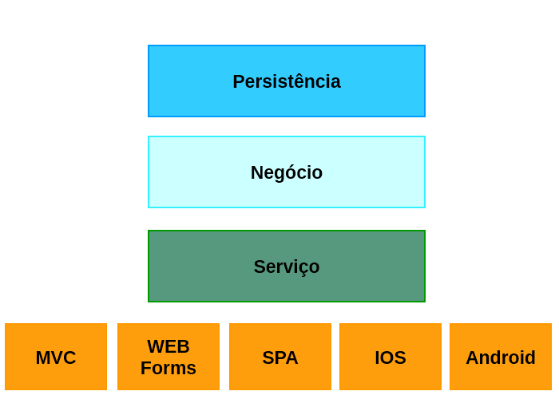Estrutura de projeto NG
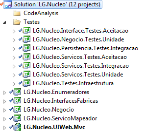Tipos de testes
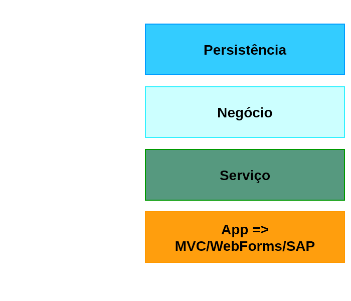
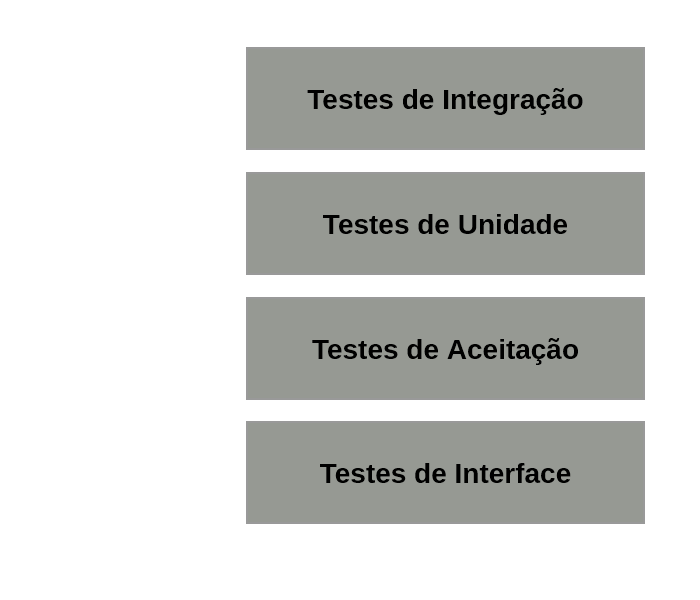
Fluxo de IC
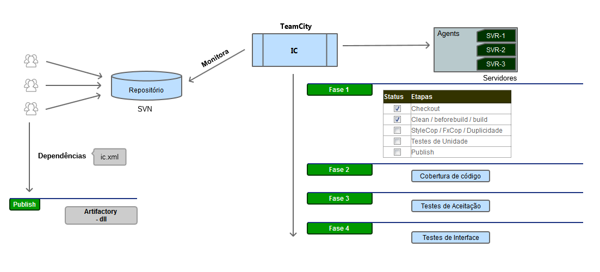Testes de Aceitação
Testes de Aceitação na NG
"é um tipo de testes de integração"
"com foco nas regras de negócio"
"pontos críticos do sistema"
Regra de Negócio
Requisito -> elabora o documento com base na proposta de solução
Desenvolvimento && Negócio -> validação
Desenvolvimento/Tester -> elabora os cenários de testes
Como testar um cadastro...?
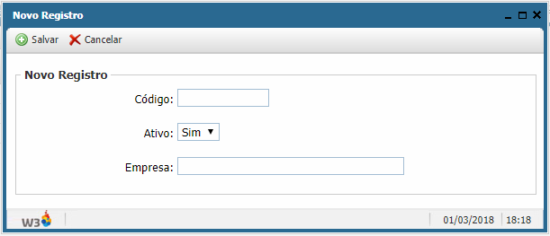Usando planilha Excel...
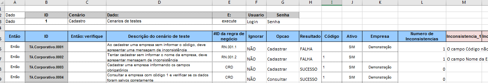Ou, com specflow...
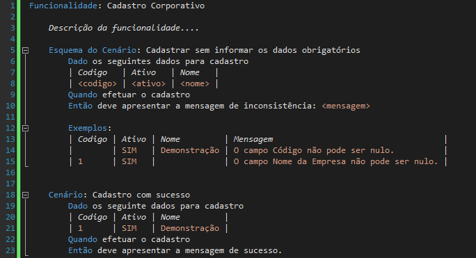Ferramentas
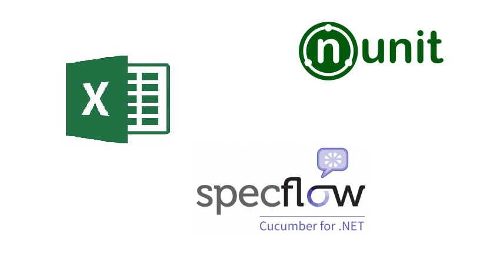Links
Leitura da planilha: AccessDatabaseEngine
Exemplos...
Projeto...
Testes de Interface
Características
browser
screenshot
diff
nUnit
Selenium WebDriver
Frameworks
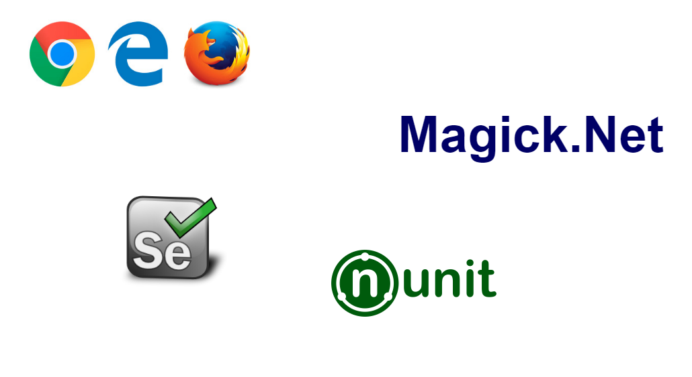Demo...
Elaboração
Teste de acesso a TODAS funcionalidades
Teste de CRUD básico
Teste de comportamento
Ambiente
Base de dados específico
Scripts de automação para execução automático
Baseline para screenshot
Relatórios
Organização
Pattern Page Object
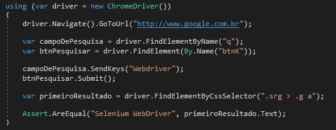
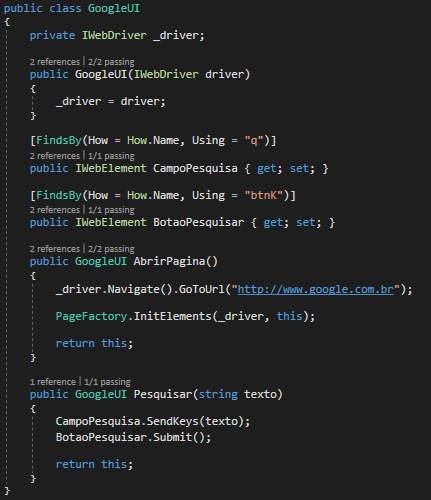
Vamos para o código

Criar tela de login
Page Object
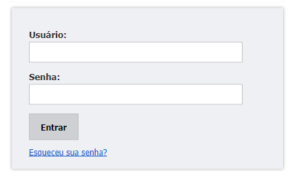Exemplo de Projeto com Page Object

Projeto...
Próximos passos

Pôr em prática...